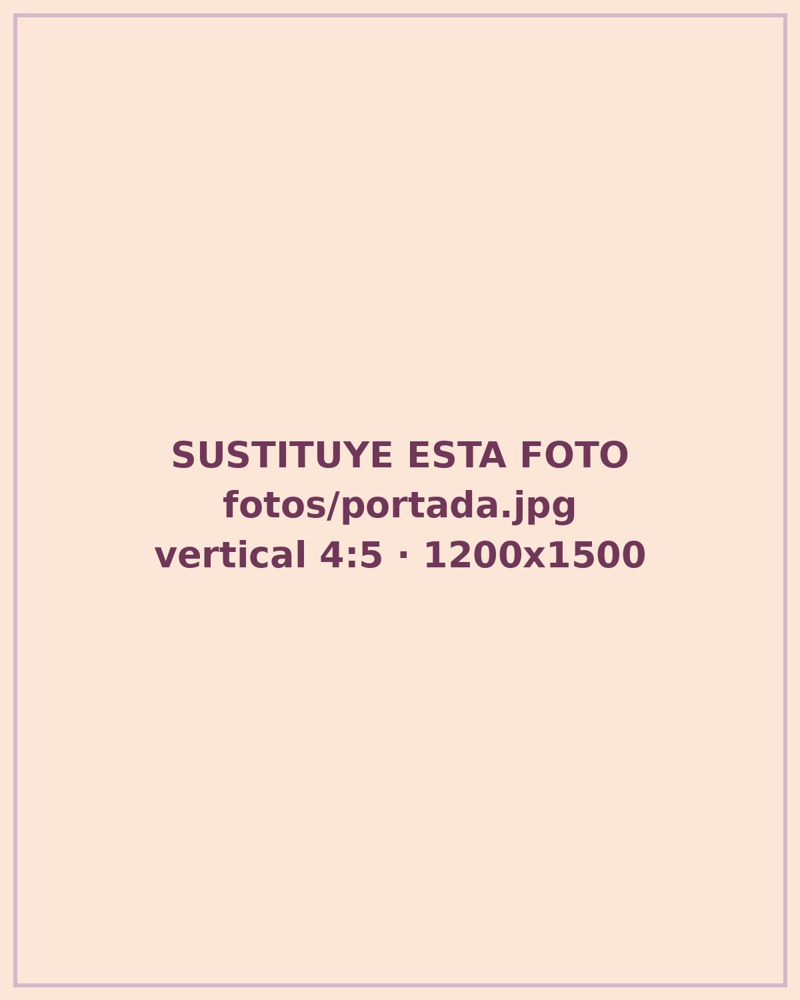
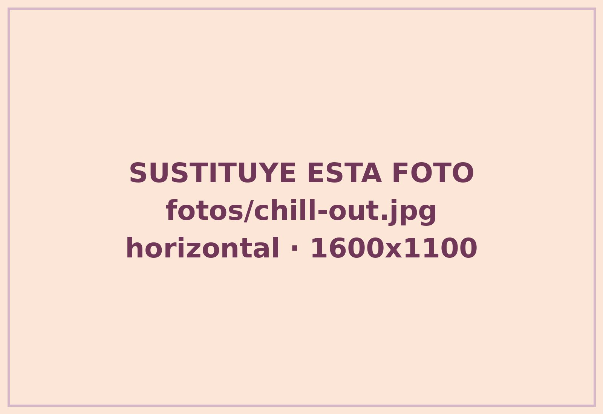

Buscas tu primer empleo
Conoce las empresas de la isla, prepara tu primera candidatura y ensaya la entrevista antes de que cuente de verdad.
Una mañana para conocer empresas que contratan, mejorar tu currículum con IA y salir con un plan claro. Sin cita previa. Sin coste.
Entrada libre y gratuita. Abierta a toda la ciudadanía, con especial atención al primer empleo y a las mujeres mayores de 45 años.

LA III EDICIÓN, EN CIFRAS · 2026
Si buscas una oportunidad, este espacio es para ti. Elige tu camino.
Conoce las empresas de la isla, prepara tu primera candidatura y ensaya la entrevista antes de que cuente de verdad.
Tu experiencia vale. Aprende a contarla con confianza y descubre formación para dar el siguiente paso.
Un stand gratuito, contacto directo y candidaturas de toda la isla en una sola mañana. Ver cómo participar
Más que una feria, una oportunidad para avanzar. Todo esto está disponible de 09:30 a 13:30, sin cita previa.
En el IA Corner te hacemos la foto para tu perfil, revisamos tu currículum y te ayudamos con LinkedIn. Por turnos, toda la mañana.
Busca el distintivo «Hoy contratamos»: son stands con vacantes abiertas. Trae tu CV y habla cara a cara.
Cuatro temas, dos rondas. Sales con algo hecho, no solo con ideas. 25 plazas por taller.
Resuelve en persona cursos, trámites y ofertas con el equipo técnico del SCE.
Estudiantes de FP te explican ciclos, requisitos y salidas, y te enseñan sus proyectos reales.
Qué perfiles buscan hoy las empresas de Lanzarote, contado por el sector turístico y empresarial.
Los talleres no coinciden con las ponencias, así que puedes hacerlo todo.
TODA LA MAÑANA, SIN CITA
IA Corner · Mesa del SCE · Talento FP · Stands de empresas · Zona chill out con café y música
09:30
Apertura · Escenario central
09:50
Ponencia de apertura · Federación Turística de Lanzarote y Asolan
10:30
11:15
11:55
Recorrido libre por los stands · Zona Conectar
12:45
Ponencia de cierre · [NOMBRE DE LA PONENTE]
40 minutos, grupos de 25 y gratis. Elige el que encaja contigo.
10:30 · SALA A
Sales con: una candidatura adaptada a una oferta real, hecha con IA.
Para todos los públicos. Trae el móvil si quieres practicar.
10:30 · SALA B
Sales con: tus fortalezas claras y la forma de contarlas con confianza.
Para tu primer empleo o para volver al trabajo.
11:15 · SALA A
Sales con: un mapa de dónde buscar en la isla según tu perfil.
Empresas, ofertas y recursos locales.
11:15 · SALA B
Sales con: tus respuestas ensayadas para la próxima entrevista.
Primer empleo o vuelta tras una pausa.
Personas de toda la isla, con ganas de trabajar, en una sola mañana. Tú traes las vacantes. La feria pone el espacio, la difusión y el público.
Nos cuentas qué vacantes tienes y qué perfiles buscas.
Atiendes en tu stand con el distintivo y recoges currículums en directo.
Compartes dos cifras: CV recibidos y candidaturas que avanzan. Sin datos personales.
EMPRESAS CONFIRMADAS
Se publican a medida que confirman.

Entre taller y taller, para un rato. Toma un café a la sombra, conversa y conoce a gente que está en tu mismo punto.
No. La entrada, los talleres, las ponencias y los servicios son gratuitos.
No. Los stands, el IA Corner y la Mesa del SCE son de acceso libre. Solo los talleres necesitan reserva, porque tienen 25 plazas.
Varias copias de tu currículum y el móvil cargado. Si no tienes CV, ven igual: en el IA Corner te ayudamos a prepararlo.
Sí. La feria está abierta a toda la ciudadanía: si quieres cambiar de trabajo, formarte o simplemente explorar, también es para ti.
Sí. Plaza El Pavón está a cota cero y todos los espacios están en la misma plaza.
Escríbenos a hola@activas.es. El stand es gratuito y se asigna por orden de solicitud.
¿Eres empresa? Solicita tu stand